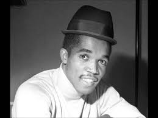
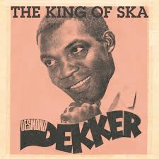
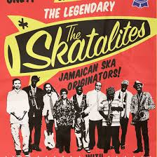

History of Ska:
Ska is style of music that developed in Jamaica in the 1950s as a precursor to Reggae. It has an easily recognisable style, characterised by bars made up of four triplets, with a definitive guitar chop on the offbeat. This is called an upstroke or skank. Ska music is typically quick, upbeat and exciting. Featuring horns (commonly trumpet, saxophone, and trombone) that take the lead and follow the "skank", as well as piano or keyboard that emphasises the walking bass line.
 Music historians typically divide the history of ska into three periods: the original Jamaican scene of the 1960s; the "2 Tone (music genre)" a sub culture ska revival of the late 1970s in Britain(which this site will specifically focus on) which fused Jamaican ska rhythms and melodies with the faster tempos and harder edge of punk rock ; and the third wave of ska, which involved bands from the UK, Europe and the US fused with more modern sounds.
 Notable artists/groups from the first wave include Prince Buster, above left, ("Al Capone" , "One step beyond"), Desmond Dekker, above right, ("the Israelites") and the Skatalites, left,("The Guns of Navarone") The Second wave, also known as "2-tone UK Ska" was pioneered by English record company 2-Tone records and by groups such as The Specials ("Ghost Town", "Too much Too young"), The Selecter ("On My Radio", "Too Much Pressure") and the more mainstream Madness("Baggy Trousers", "One step Beyond")